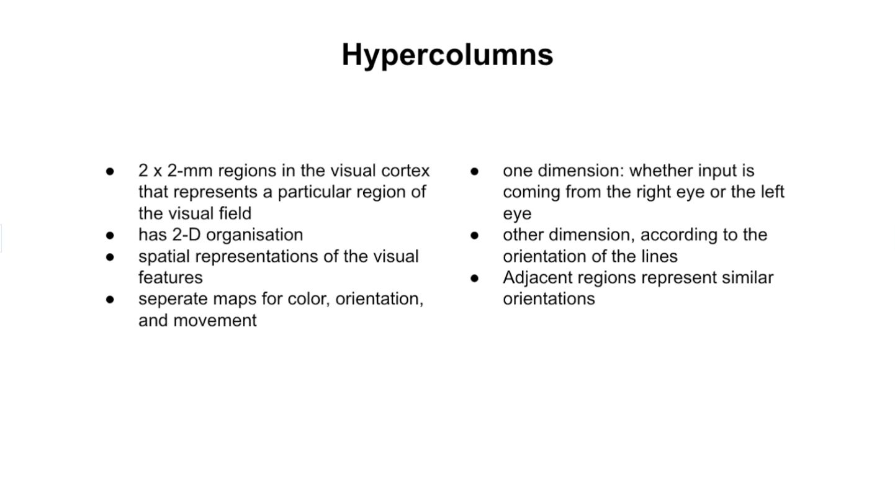
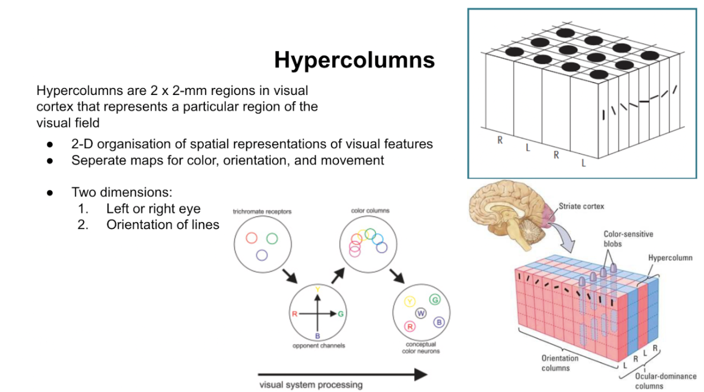

Use visuals
Include a variety of visual material to support your presentation. These can be graphs, flow charts, pictures and other kinds of visual material that include information relevant to the content of the verbally transmitted message.
Examples
Original
Improved
Cognitive psychology theories supporting this point
The Dual-channel assumption: Working memory and Dual-Code Theory
Both Baddeley’s theory of working memory and Paivio’s theory of dual-coding theory incorporate the central idea of the Dual Channel assumption by providing an explanation of human information processing that divides it into two distinct systems, a verbal and a non-verbal system.
The verbal channel is responsible for language, thus it is concerned with narration and text. The non-verbal system is responsible for all sensory input, including visual information like images and animations.
Paivio’s dual-coding theory also suggests that the way the information is encoded differs in the two systems. As a result, initiating both the visual and verbal encoding of information enhances the processing and retention of the information because of the complete representation that is being formed by the learners.
Linking the Dual Channel assumption to information processing in the classroom provides the basis of why including visuals in a presentation is an efficient tool to enhance the learning experience.